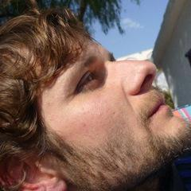

Consumer Marketing is becoming the most computationally significant capability in the enterprise. In this talk I will be describing the challenges faced by Consumer Marketing in the FMCG world and our experience in implementing a Consumer Engagement platform to deliver soft real-time mass customisation.
I'll describe the design and implementation of our core platform, Leapsight Semantic Dataspace (LSD), a distributed, scalable, fault-tolerant deductive semantic-graph database, and why and how we turned to Erlang/OTP and Riak Core as a foundation for our platform.
Talk objectives:
* Review the challenges faced by marketeers in the Consumer Marketing space and a successful solution blueprint
* Detail why and how we turned to Erlang/OTP and Riak Core to enable the implementation of a next-generation solution
* Review the design of LSD, including inner workings of the Datalog-based query language and RDF-graph information model and Erlang/Riak Core design patterns
* Use Cases
Target audience:
Architects, Engineers, Developers
Alejandro is an experienced executive with more than 15 years in start-ups and multinational organisations, having held executive positions in both Marketing and IT. He has a track record in business and marketing technology innovation, pioneering the concept of 1-to-1 Consumer Engagement in a very large global FMCG organisation. Lately he co-founded Leapsight to fill the void in the Consumer Engagement space. He is also an autodidact hacker and architect, with experience in the design and development of mission critical distributed OO applications using NeXT/OpenStep/WebObjects Objective-C, Java, JINI/Javaspaces. He finally converted to FP and he is now having fun working with Erlang/OTP.
Github: aramallo
Twitter: @aramallo